Overview
A robust, fully sealed force-sensing system for R&D, currently in the build and test phase. Wing makers have had no quantitative way to measure the handle forces a rider generates, the same forces that directly drive wing performance. The goal was to design, build, and validate a system that logs front- and rear-hand loads during live saltwater sessions while staying accurate, waterproof, and true to the riding experience.
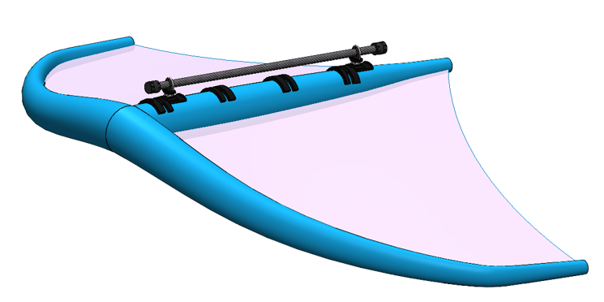
Mounting & Force Measurement
The rider's hands act on a carbon fiber auxiliary boom that doubles as the handle and electronics housing. A custom-designed wing attachment lets the measurement handle swap in for the original wing boom, making the test system non-invasive and easy to remove. Two inline load cells, one front and one rear, capture each hand's force independently throughout the session. Dowel pins were designed to prevent any bending of the load cells.
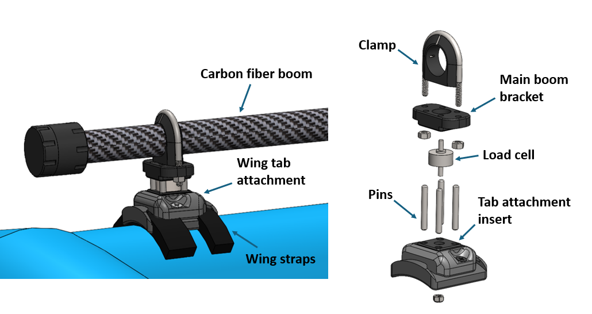
Waterproof Boom Seal
The electronics live sealed inside the carbon fiber boom, so the end caps had to be fully waterproof and corrosion-resistant for repeated saltwater use. The end cap design uses a ferrule-compression seal: a sleeve slides onto the boom, then a ferrule, then a threaded cap carrying an O-ring seated in a groove.
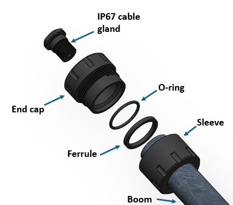
Threading the cap down compresses the ferrule between the cap and sleeve, converting that make-up force into axial compression on the O-ring, energizing it against the groove and tube to form the seal. Roughening the boom's outer surface on the lathe measurably improved grip and seal reliability. The machined caps below include a two-wire cable gland for the load cell leads.
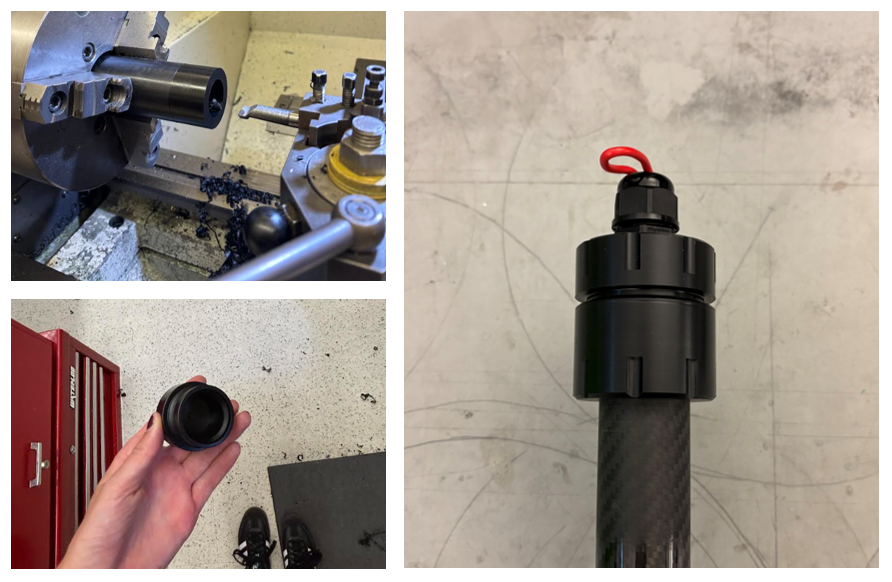
Electronics & Data Logging
Electronics are stored inside the boom. The housing covers the whole 1.2m length of the boom, as is rotation locked with an epoxied key on the inner boom surface. The housing is divided into an access side and a maintenance side. The idea is that the user can undo the front end cap and either start data-logging, access the SD card, or charge the device. This access side also has a status LED which indicates data-logging. The 2 LiPo batteries are other close to this side to maintain close proximity to the charger. The batteries are in the 2P1S configuration to double the capacity. The maintenance side has an IP67 cable gland which runs through the back end cap so that the load cells can be wired to their respective ADCs inside the boom. The IMU and MCU are also on this side of the electronic housing.

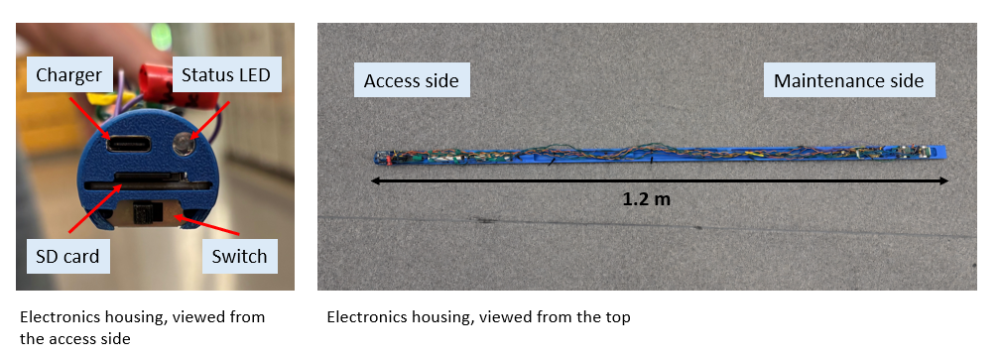
System Design, Power Distribution, and Data Logging
Inside the sealed boom, an ESP32-S3 microcontroller reads the load cells through dual 24-bit ADCs, alongside a 9-DOF IMU for orientation tracking. The package runs off four isolated power rails and a LiPo pack, and logs synchronized force and orientation data to an SD card for post-session analysis.
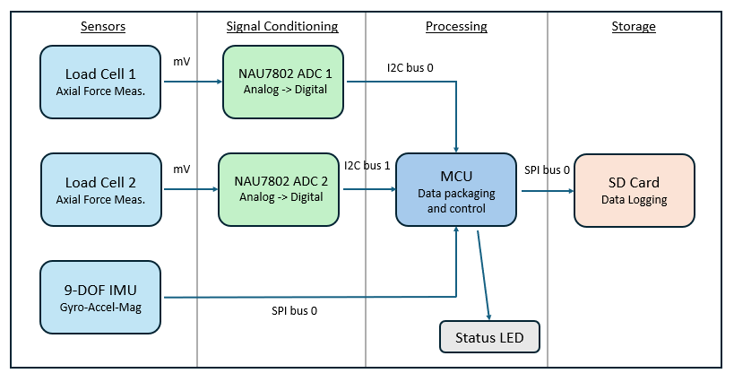
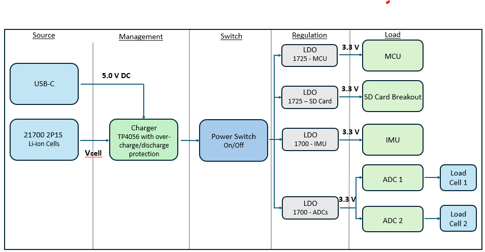
Analysis & Validation
The assembly was analyzed under a worst-case gust load of 450 N, derived from lift calculations on the wing in a high-gust scenario. Under this load, all components remained below their respective yield strengths, confirming the structure carries the highest expected aerodynamic loads without failure. The analysis also confirmed the dowel pins were functioning as intended: they did not carry any of the axial load, leaving the load path through the load cell intact, while reducing bending stress on the load cell by reacting off-axis loads that would otherwise be transferred to it.
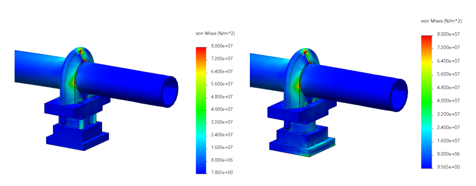
To confirm the sealed electronics package wouldn't overheat during operation, we ran a steady-state thermal finite element analysis of the full internal assembly. We used deliberately conservative boundary conditions: a 30 °C ambient temperature and a 40 °C inner-tube temperature, so the model would represent a worst-case thermal environment rather than a typical one. Solving to steady state shows the equilibrium temperatures each component settles at under continuous load, which is the condition that matters for a device meant to run for extended periods.
The analysis identified the SD card LDO regulator as the hottest component at 63.2 °C. Mapping the full temperature distribution let us confirm that even the worst-case hot spot stayed within the component's rated operating range, and pinpoint exactly where to focus if further thermal margin were ever needed.
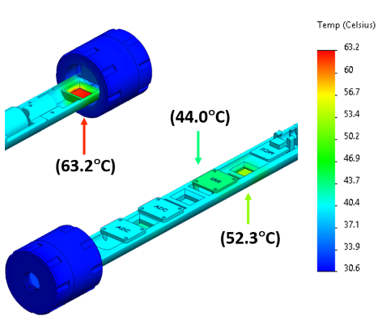
Field Deployment
On-water testing is currently underway to validate waterproofing, force-measurement accuracy, and durability. The prototype logs time-synchronized force and orientation data to a CSV file for post-session analysis, as requested by Tagmata.
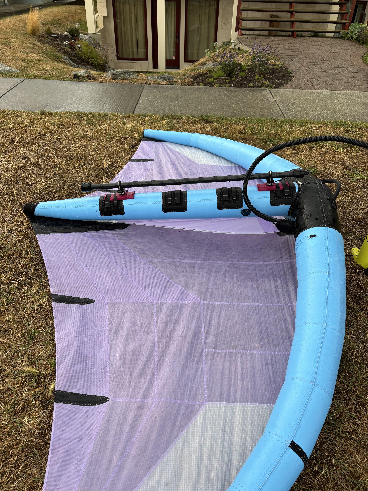
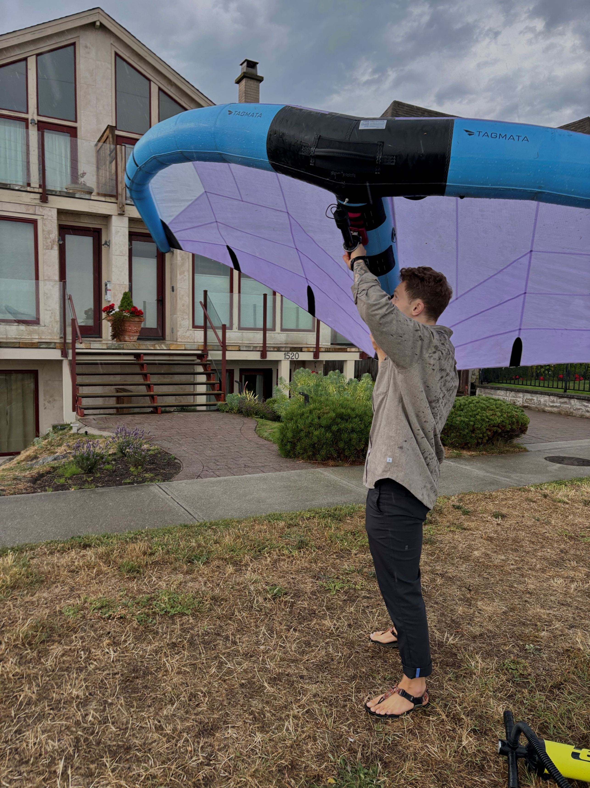
- Org
- Tagmata Materials
- Timeframe
- Jan 2026 – Present
- Role
- Mechanical / Mechatronics
- Domain
- Instrumentation · Sealing
- Key Tools
- SolidWorks · FEA · ESP32-S3 · 24-bit ADC · IMU